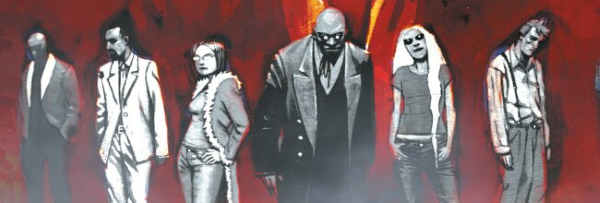

Scooby Doo for grown-ups, as a squad of occult investigators find themselves out of their depth in a world where realpolitik makes a mockery of childish ideas of good and evil. The series left some seriously dangly threads, some of which were taken up in spin-off Absalom before the return of some of the key players in The Diaboliks.
Art by Dom Reardon
| Story Title | Parts | Pages | w indicates a wraparound coverCovers | Year(s) | Issues | Writer | Artist | Colourist | Letterer |
|---|---|---|---|---|---|---|---|---|---|
| Going Underground | 6 | 32 | 1325: Frazer Irving 1 | 2002-2003 | p2003, 1322-1326 | Gordon Rennie | Dom Reardon | [b&w] | Tom Frame |
| Moving In | 3 | 15 | 1332: Clint Langley 1 | 2003 | 1331-1333 | Gordon Rennie | Dom Reardon | [b&w] | Tom Frame |
| Breaking Out | 4 | 20 | 1339: Clint Langley 1 | 2003 | 1337-1340 | Gordon Rennie | Dom Reardon | [b&w] | Ellie de Ville |
| [Downtime] | 6 | 30 | 1363: Clint Langley 1 | 2003 | 1363-1368 | Gordon Rennie | Dom Reardon | [b&w] | Tom Frame |
| Krystalnacht | 1 | 10 | 0 | 2003 | p2004 | Gordon Rennie | Dom Reardon | [b&w] | Tom Frame |
| Picking Up the Pieces | 1 | 5 | 0 | 2004 | 1400 | Gordon Rennie | Dom Reardon | [b&w] | Ellie de Ville |
| Creepshow | 8 | 40 | 1407: Frazer Irving 1 | 2004 | 1401-1408 | Gordon Rennie | Dom Reardon | [b&w] | Ellie de Ville |
| Weird War Tales | 1 | 10 | 0 | 2004 | p2005 | Gordon Rennie | Dom Reardon | [b&w] | Annie Parkhouse |
| Safe House | 5 | 25 | 1424: Simon Davis 1 | 2005 | 1420-1424 | Gordon Rennie | Dom Reardon | [b&w] | Tom Frame |
| Northern Dark | 6 | 30 | 1445: Clint Langley 1447: Dom Reardon 2 | 2005 | 1443-1448 | Gordon Rennie | Dom Reardon | [b&w] | Tom Frame |
| Strange Bedfellows | 1 | 10 | 0 | 2005 | p2006 | Gordon Rennie | Dom Reardon | [b&w] | Annie Parkhouse |
| Changelings | 6 | 30 | 1472: Nick Percival 1 | 2006 | 1469-1474 | Gordon Rennie | Dom Reardon | [b&w] | Tom Frame |
| Ashes | 8 | 40 | 1554: David Kendall 1 | 2007 | 1551-1558 | Gordon Rennie | Dom Reardon | [b&w] | Annie Parkhouse |
| The Nativity | 1 | 10 | 0 | 2007 | p2008 | Gordon Rennie | Dom Reardon | [b&w] | Simon Bowland |
| Visiting Hour | 1 | 8 | 0 | 2018 | 2111 | Gordon Rennie | Dom Reardon | [b&w] | Simon Bowland |
| >> Features << | |||||||||
Supertitle: "Feature".Caballistics, Inc. - The Final Chapter | 1 | 1 | 0 | 2018 | 2111 | Karl Stock | Dom Reardon | [b&w] | n/a |
| year | episodes | pages |
| 2000 | 0 | 0 |
| 2001 | 0 | 0 |
| 2002 | 1 | 6 |
| 2003 | 19 | 101 |
| 2004 | 10 | 55 |
| 2005 | 12 | 65 |
| 2006 | 6 | 30 |
| 2007 | 9 | 50 |
| 2008 | 0 | 0 |
| 2009 | 0 | 0 |
| 2010 | 0 | 0 |
| 2011 | 0 | 0 |
| 2012 | 0 | 0 |
| 2013 | 0 | 0 |
| 2014 | 0 | 0 |
| 2015 | 0 | 0 |
| 2016 | 0 | 0 |
| 2017 | 0 | 0 |
| 2018 | 1 | 8 |
| 2019 | 0 | 0 |
| 2020 | 0 | 0 |
Comic strip data (excludes other content):